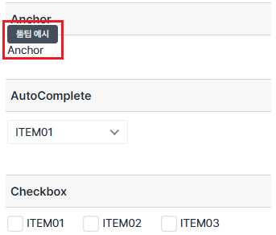
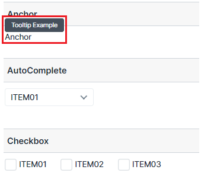
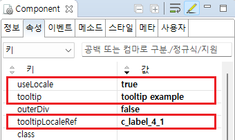

[컴포넌트 공통] 클라이언트 다국어 적용하기(툴팁) - tooltipLocaleRef
1개요
클라이언트 다국어 설정 중 'tooltipLocaleRef' 속성 예시입니다.
tooltipLocaleRef 속성은 툴팁을 소스에 하드 코딩해야 하는 경우에 사용됩니다.
useItemLocale 속성이 있는 대표적인 컴포넌트는 Anchor, AutoComplete, Checkbox, Radio, SelectBox, TextBox, Trigger 입니다.클라이언트 다국어는 브라우저의 언어 설정에 따라 동작합니다.
브라우저의 언어 설정을 변경한 경우 브라우저를 전체 새로고침 해야 변경된 언어가 반영됩니다.
2구현된 기능
Anchor, AutoComplete, Checkbox, CheckComboBox, Radio, SelectBox, TextBox, Trigger 컴포넌트에 tooltipLocaleRef 속성을 사용하여 브라우저 언어에 따라 툴팁을 한국어, 영어로 출력하기
3예제 테스트 방법
이 예제는 컴포넌트에 마우스를 올리면 툴팁이 노출됩니다.
툴팁은 브라우저의 언어 설정에 따라 출력되는 문자열이 다릅니다.
3.1한국어 설정
1
STEP 1: 브라우저의 언어 설정을 한국어로 설정합니다.
설정을 변경한 경우에는 브라우저를 전체 새로 고침을 해야 적용됩니다.
Image 1.브라우저(Chrome) 실행 예시 - 언어 설정

2
STEP 2: 실행 결과를 확인합니다.
웹스퀘어 컴포넌트의 툴팁 문자열이 한국어로 표시됩니다.
Image 2.브라우저(Chrome) 실행 예시

3.2영어 설정
1
STEP 1: 브라우저의 언어 설정을 영어로 설정합니다.
설정을 변경한 경우에는 브라우저를 전체 새로 고침을 해야 적용됩니다.
Image 3.브라우저(Chrome) 실행 예시 - 언어 설정

2
STEP 2: 실행 결과를 확인합니다.
웹스퀘어 컴포넌트의 툴팁 문자열이 영어로 표시됩니다.
Image 4.브라우저(Chrome) 실행 예시

4구현 예시
4.1다국어 정의 하기
언어팩 JS 파일에 화면에서 사용할 키(Key)와 값(Value)을 정의합니다. 예제 프로젝트의 경우 한국어, 영어가 설정되어있으며 파일 위치는 아래와 같습니다.
한국어 : [예제 프로젝트]/WebContent/lang/ko.js
영어 : [예제 프로젝트]/WebContent/lang/en.js
Example 1.JSON
//한국어 - ko.js 예시 //화면에서 사용할 문자열을 등록합니다. //c_label_4_1 WebSquare.WebSquareLang = { "c_label_4_1": " 툴팁 예시" };
Example 2.JSON
//영어 - en.js 예시 //화면에서 사용할 문자열을 등록합니다. //c_label_4_1 WebSquare.WebSquareLang = { "c_label_4_1": "Tooltip Example" };
4.2속성 정의하기
[필수 고정] useLocale="true" //[default : false, true] 클라이언트 다국어 설정의 사용 여부를 정의합니다.
[필수] tooltip="tooltip example" //다국어 KEY가 없는 경우 표현할 툴팁 문자열
[필수] tooltipLocaleRef="c_label_4_1" //다국어 KEY
Image 5.웹스퀘어 스튜디오의 Component View 예시

Example 3.Source
<!-- anchor의 소스 본문 예시 --> <w2:anchor tooltipLocaleRef="c_label_4_1" useLocale="true" tooltip="tooltip example" outerDiv="false"> <xf:label><![CDATA[Anchor]]></xf:label> </w2:anchor>
5주요 API
tooltipLocaleRef
tooltip
useLocale